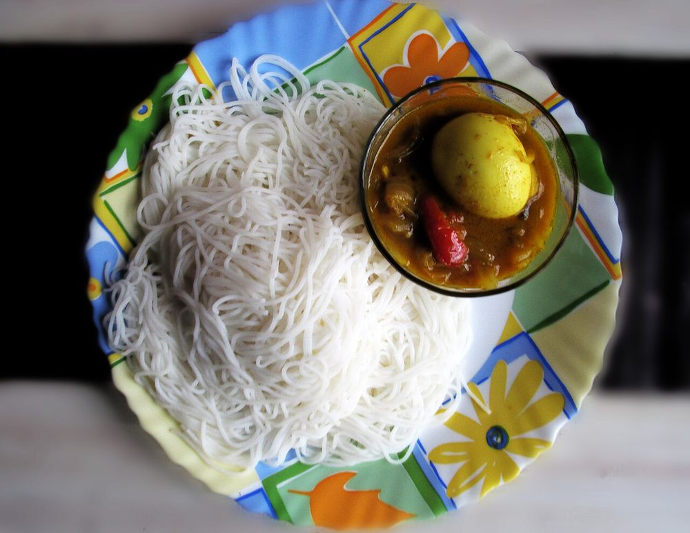

Allergens: none of the ten listed below
Checked against the ingredient list for ten allergens: milk, egg, fish, crustaceans, tree nuts, peanuts, sesame, mustard, soy and gluten. Brands vary, so read the label on anything new to you.
Ingredients
Quantities for 4.
- 2 cups, fine and roasted Rice Flour
- 2.5 cups Waterboiling
- 1 cup, freshly grated Coconut
- 2 tsp Coconut Oilfor greasing the plates and hands
- 3/4 tsp Salt
Cookware
stovetop, steamer
Before you start
- You need an idiyappam press (sevanazhi) with the finest disc. A potato ricer with a fine plate will do at a push.
- If your rice flour is not pre-roasted, dry-roast it on low for 6-8 minutes until warm and fragrant without colouring, then cool.
- Work the dough while it is hot. Hot enough to be just bearable. Cold dough will not extrude and comes out as broken worms.
Method
- Bring the water to a full rolling boil with the salt and 1 tsp of the coconut oil.
- Pour the boiling water over the rice flour all at once, stirring hard with a wooden spoon until it comes together as a shaggy mass.All at once, not gradually. Half-scalded flour makes a dough that cracks.
- Cover and rest 5 minutes so the flour absorbs fully.
- Oil your palms and knead the warm dough for 3-4 minutes until it is completely smooth, soft and non-sticky. Like fresh play dough.If it cracks when rolled, sprinkle in a tablespoon of hot water and knead again.
- Grease the idiyappam plates and scatter a teaspoon of grated coconut on each.
- Load the press and squeeze the dough onto the plates in tight overlapping spirals, about 1cm thick.
- Scatter a little more coconut on top and stack the plates in a steamer over rapidly boiling water.
- Steam 6-8 minutes, until the strings look glossy and set and no longer taste of raw flour.Over-steaming makes them gummy. Six minutes is usually enough for a single layer.
- Lift off and let them cool for 2 minutes before easing them off the plate, or they will tear.
Storage
Best within a few hours. Keeps 2 days refrigerated in a covered box; re-steam 3 minutes to bring the softness back. Reheating dry turns them to string.
Nutrition Good estimate
Low protein: 5 g a serving, 6% of the calories
| Per serving102 g | Per 100 g | |
|---|---|---|
| Calories | 380 kcal | 372 kcal |
| Protein | 5.4 g | 5 g |
| Carbohydrate | 66.3 g | 65 g |
| of which sugars | 1.3 g | 1 g |
| Fibre | 3.7 g | 4 g |
| Fat | 10.1 g | 10 g |
| of which saturated | 8.1 g | 8 g |
| of which unsaturated | 1.2 g | 1 g |
Estimated from raw ingredients using USDA FoodData Central.
Written and checked against sources, not cooked in a test kitchen. Times, yields, allergens and nutrition are worked out rather than measured, so use your own judgement on doneness and on storing. More in About.